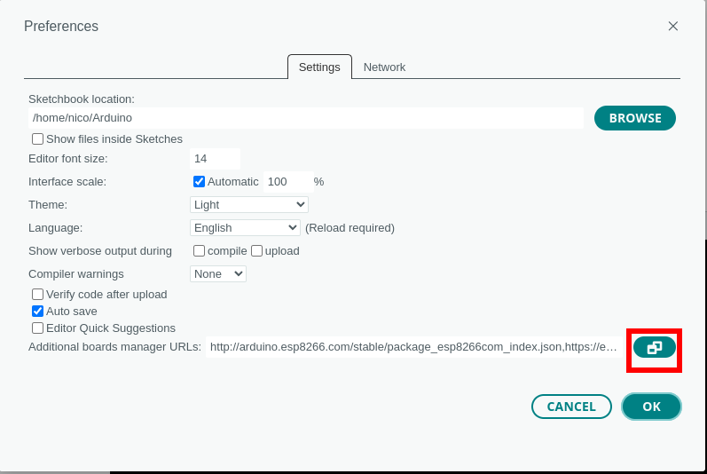

Utilisation de Arduino IDE

Préparer l'IDE pour les cartes ESP
source : https://randomnerdtutorials.com/installing-the-esp32-board-in-arduino-ide-windows-instructions/
Dans Arduino IDE, aller dans File > Preferences

Dans le champs “Additional Board Manager URLs” ajouter/modifier ces lignes :
http://arduino.esp8266.com/stable/package_esp8266com_index.json
https://espressif.github.io/arduino-esp32/package_esp32_index.json

Dans le menu Boards Manager, rechercher esp32, installer "ESP32 by Espressif Systems"
Téléverser un programme
Dans le logiciel, Arduino IDE, sélectionner :
- la correcte carte ESP
- le port COM utilisé
Programme test :
void setup() {
pinMode(2, OUTPUT);
pinMode(5, OUTPUT);
}
void loop() {
digitalWrite(2, HIGH);
delay(100);
digitalWrite(2, LOW);
delay(100);
digitalWrite(5, HIGH);
delay(100);
digitalWrite(5, LOW);
delay(100);
}
Réaliser ce montage :